Sau thành công của bộ Etude Op.10, Chopin tiếp tục sáng tác 12 Etudes thuộc Op.25, được xuất bản vào năm 1837. Nếu Op.10 chủ yếu tập trung vào phát triển kỹ thuật tay phải với các kỹ thuật phức tạp, thì Op.25 lại có sự cân bằng hơn giữa hai tay, đồng thời mang đậm tính nhạc trữ tình.
STT
Những bar đầu
Nội dung
No 1 (Ab major)
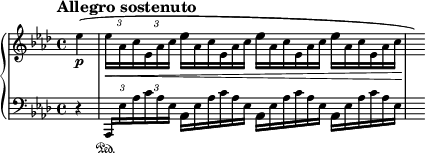
Một trong những Etude đẹp nhất của Chopin với những hợp âm rải nhanh, tạo hiệu ứng như tiếng đàn hạc. Robert Schumann từng ca ngợi nó là một kiệt tác về sự mềm mại và tinh tế.
No 2 (F minor)
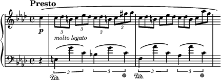
Bài etude này yêu cầu kỹ thuật lướt ngón liên tục ở tay phải, đòi hỏi sự mềm mại và linh hoạt. Dù có cấu trúc đơn giản, nó thực sự là một thử thách đối với các nghệ sĩ piano.
No 3 (F major)
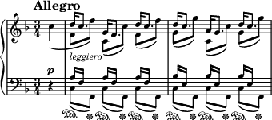
Một Etude có phong cách vui tươi, với các nốt chạy nhanh và lả lướt. Bài này yêu cầu sự chính xác cao trong việc thay đổi vị trí ngón tay.
No 4 (A minor)
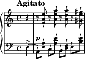
Etude này là một bài tập quan trọng về kỹ thuật legato, với tay trái di chuyển liên tục tạo nền hòa âm, trong khi tay phải chơi giai điệu chính.
No 5 (E minor)
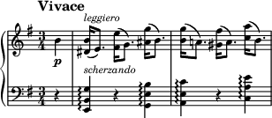
Được gọi là "Wrong Note" do những quãng hai xuất hiện liên tục, tạo ra hiệu ứng không ổn định nhưng rất độc đáo. Dù mang tên như vậy, bài này vẫn giữ được chất nhạc trữ tình của Chopin.
No 6 (G# minor)
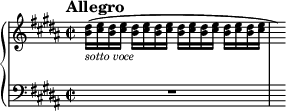
Đây là một Etude thiên về kỹ thuật hòa âm với các hợp âm kép, giúp luyện tập sự mềm mại trong việc chuyển đổi giữa các vị trí phức tạp.
No 7 (C# minor)
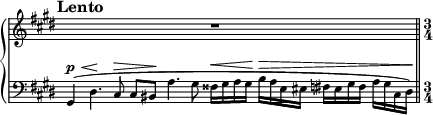
Một tác phẩm có giai điệu vô cùng buồn và đầy nội tâm. Nó yêu cầu sự kiểm soát tốt về sắc thái để thể hiện được chiều sâu cảm xúc.
No 8 (Db major)
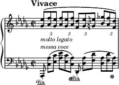
Một bài etude mang phong cách vui tươi, với các nốt chạy nhanh ở tay phải tạo nên cảm giác nhảy múa nhẹ nhàng.
No 9 (Gb major)
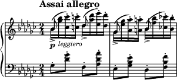
Bài này có những nốt chạy nhanh và nhẹ như cánh bướm, yêu cầu sự kiểm soát tốt về tốc độ và độ linh hoạt của bàn tay.
No 10 (B minor)
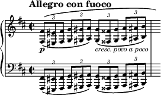
Một bài etude có tiết tấu mạnh mẽ, với các hợp âm chạy nhanh tạo nên cảm giác kịch tính và đầy năng lượng.
No 11 (A minor)
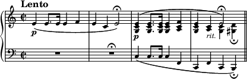
Một trong những Etude khó nhất của Chopin, với tốc độ nhanh, yêu cầu kiểm soát nhịp điệu chặt chẽ và khả năng giữ cường độ mạnh mẽ.
No 12 (C minor)
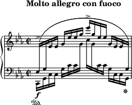
Etude cuối cùng trong bộ Op.25 mang đến cảm giác mạnh mẽ như những con sóng đại dương cuộn trào. Đây là một thử thách lớn về sự dẻo dai và kiểm soát tốc độ.